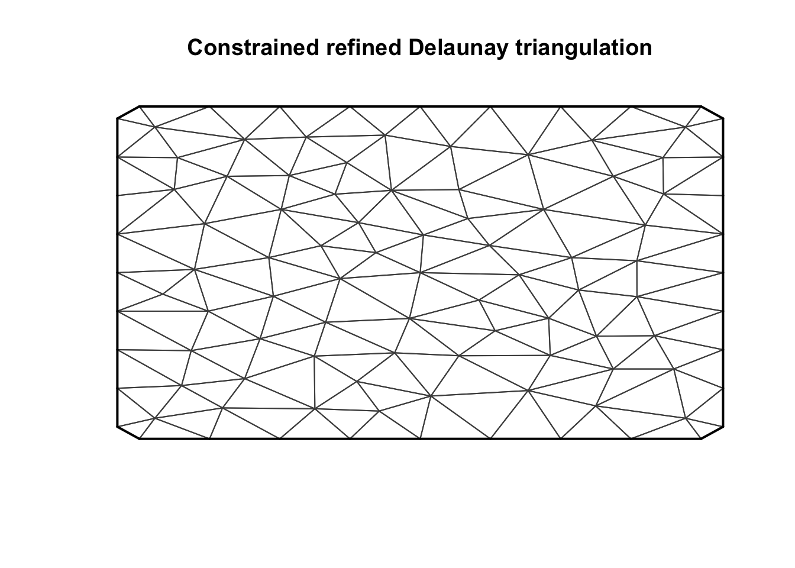

In this topic we show how to make a bad mesh. When would you like to get a bad mesh? Never! But showing what not to do is very instructive.
As mentioned in topic Mesh Creation including Coastlines, we think of mesh as a “gate”, in the sense that you do not need to know how it is made, only how to verify that it works. This means that you can use a mesh created by another, as long as you plot it and make sure it “looks good”, and the other things mentioned in that topic.
We load any packages and set global options. You may need to install these libraries (Installation and general troubleshooting).
library(INLA)
rm(list=ls())
options(width=70, digits=2)
set.seed(2017)loc = matrix(c(1, 0, 1, 1, 0, 1, 0,0), ncol=2, byrow = T)
mesh1 = inla.mesh.2d(loc, max.edge = 0.2)
plot(mesh1)
The problem with this mesh is that you may want to fit data, plot the result, or do predictions, too close to the boundary. If you only want to fit data far inside this mesh, there is nothing wrong with it.
Fix: Add an outer extension, using the offset argument.
loc = matrix(c(1, 0, 1, 1, 0, 1, 0,0), ncol=2, byrow = T)
mesh2 = inla.mesh.2d(loc, max.edge = 0.2, offset = c(0, 0.05))
plot(mesh2)This outer extension is too small.
You can see that the triangles in the outer extension is smaller than inside the main part of the mesh. When would we want a finer approximation in the mesh extension than we have in the main part of the mesh? Never.
Fix: Make the offset value nr 2 larger.
loc = matrix(c(1, 0, 1, 1, 0, 1, 0,0), ncol=2, byrow = T)
mesh3 = inla.mesh.2d(loc, max.edge = c(0.2, 0.2), offset = c(0, 0.5))
plot(mesh3)This mesh is wasting so much computational effort; it is getting very precise approximations in the outer extension.
Fix: The second value in max.edge = c(0.2, 0.2) needs to be increased, for example to max.edge = c(0.2, 0.6).
Improvement: INLA may require 4 times as much time and memory to fit the bad compared to the good choice.
loc = matrix(c(1, 0, 1, 1, 0, 1, 0, 0, 0.5, 0.5, 0.499, 0.499, 0.3, 0.3, 0.2999, 0.2999), ncol=2, byrow = T)
mesh4 = inla.mesh.2d(loc, max.edge = 0.2, cutoff = 1e-12)
plot(mesh4)
points(loc)The mesh tries to put one node at each location in loc. Because some of the locations are very close, this results in a super-fine mesh where you find these points.
Fix: Increase the cutoff, ignoring locations close to another location. E.g. set cutoff = 0.002
Comments